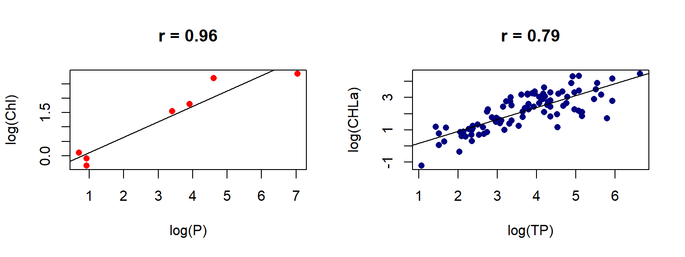
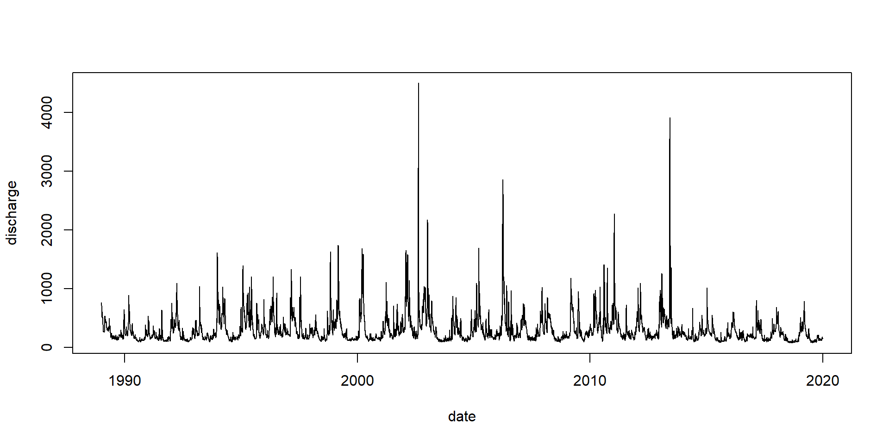
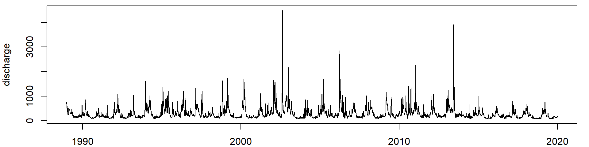
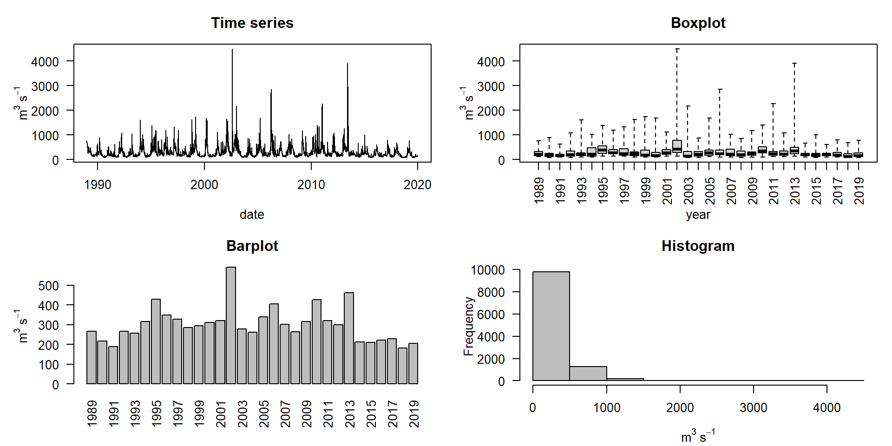
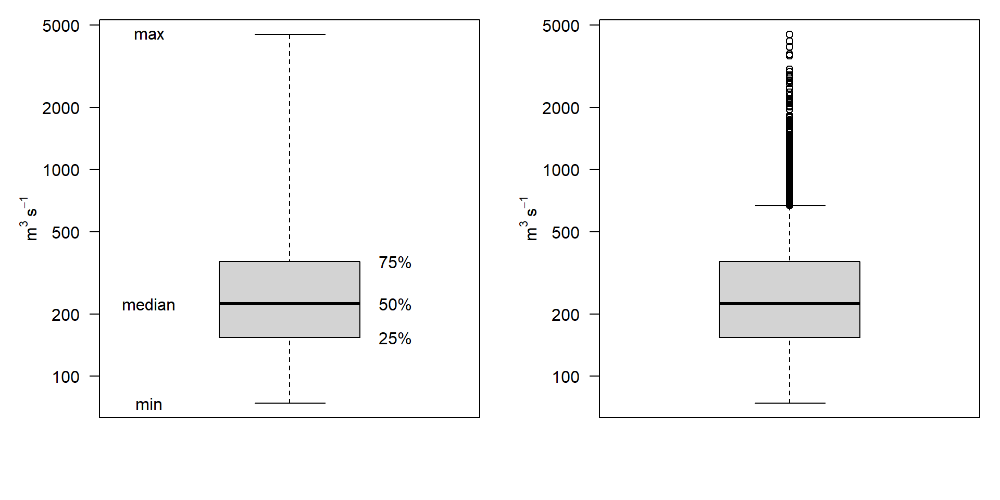
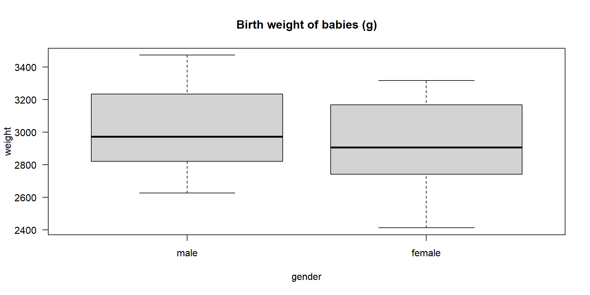

01-Introduction
Applied Statistics – A Practical Course
Thomas Petzoldt
2024-10-30
Preface
Goals of the course
- Introduction to “Data Science”
- Statistical concepts and selected methods
- Statistical parameters
- Distributions and probability
- Statistical tests
- Model selection
- Practical experience
- Data strutures
- Basics of the R language
- Applications with real and simulated data sets
\(\Rightarrow\) Practical understanding and “statistical feeling”,
\(\rightarrow\) More important than facts learned by heart.
Topics
- Basic Concepts of Statistics
- An Introduction to R
- Statistical Parameters and Distributions
- Linear Models
- Analysis of Variance
- Nonlinear Regression
- Time Series Analysis
- (Multivariate Statistics)
Material
- Slides, Tutorials: tpetzoldt.github.io/elements
- Exercises: tpetzoldt.github.io/element-labs
\(\rightarrow\) Slides and exercises are regularly updated, depending on the progress of the course. Comments are welcome.
Written exam at the end of the semester
\(\rightarrow\) > 50% practical questions
\(\rightarrow\) Attend the labs!
Questions?
Why Statistics?
\(\rightarrow\) a few examples before we begin
An introductory example
Daily average discharge of River Elbe, pegel Dresden, river km 55.6
date, discharge
1806-01-01, 472
1806-01-02, 1050
1806-01-03, 1310
1806-01-04, 1020
1806-01-05, 767
1806-01-06, 616
...
2020-10-11, 216
2020-10-12, 204
2020-10-13, 217
2020-10-14, 288
2020-10-15, 440
2020-10-16, 601
2020-10-17, 570
2020-10-18, 516
2020-10-19, 450
2020-10-20, 422
2020-10-21, 396
2020-10-22, 372
2020-10-23, 356
2020-10-24, 357
2020-10-25, 332
2020-10-26, 303
2020-10-27, 302
2020-10-28, 316
2020-10-29, 321
2020-10-30, 331
2020-10-31, 353
2020-11-01, 395\(>\) 70,000 measurements. How can we analyse this and what does it mean?
Data Source: Bundesanstalt für Gewässerkunde
Plot the last 20 years
Discharge of the Elbe River, gauge station Dresden, data source BfG
What do these data tell us?

- What is the average discharge? → mean values
- How much variation is in the data? → variance
- How likely are droughts or floods? → distribution
- How precise are our forecasts? → confidence intervals
- Which factors influence discharge? → correlations
How to start
- Mean value: 224
- Median value: 224
- Standard deviation: 253
- Range: 2, 4500
Which of these parameters are most appropriate?
Graphics
Boxplots
- Note the log scale of y!
- In the right version, whiskers extend to the most extreme data point which is no more than 1.5 times the interquartile range from the box.
Three ways to work with statistics
Descriptive statistics and graphics
- plots, like in the examples
- mean values, standard deviations, …
- interpret raw data
Hypothesis testing
- distinguish effects from random fluctuations
- make results more convincing
Statistical modelling
- measure size of effects (e.g. climate trends)
- build models that aggregate dependencies
- machine learning
Statistical hypothesis testing
How likely is it, that our hypothesis is true?
- Turn scientific into statistical hypothesis
- Estimate probability (p value) of a given hypothesis
Examples
- Is a medical treatment successful or not? → \(\chi^2\)-test
- Does a specific food diet increase yield of a fish farm? → t-test
- Which factors (e.g. food, temperature, pH) of a combined treatment influence growth of aquatic animals? → ANOVA
- (How) does observed algal biomass depend on phosphorus?
Statistical modeling
Fit a statistical model to the data
- Select proper modelling strategy
- Design statistical models
- Measure effect size
- Select the optimum model between different model candidates
Examples
- Fit a distribution to annual discharge data to estimate the 100 year flood.
- Fit an ANOVA model to experimental data to see which factors influence the result most.
- Fit a multiple linear model to climate data to see how much climate trends differ between geographical location.
Example: Compare two mean values
- A given data set (Dobson, 1983) contains the birth weight (in g) of 12 boys and 12 girls.
- Has the weight difference something to do with the gender of the babies or is it a purely random fluctuation?
Example: Correlation and regression
- Dependence of chlorophyll concentration in lakes on phosphorus, a regional data set from Koschel and Scheffler (1985) (left) and from Vollenweider and Kerekes (1980) (right).
- Which of the two figures has greater predictive power? Why?
How to do this in practice?
- Data
- Mathematics
- Computing
Which data structure is better?
Wide format
| station | 2021 | 2022 | 2023 |
|---|---|---|---|
| A | 3 | 10 | 2 |
| B | 4 | 2 | 13 |
| C | 9 | 10 | 10 |
| D | 9 | 18 | 2 |
| E | 16 | 9 | 2 |
Long format
| year | station | value |
|---|---|---|
| 2021 | A | 3 |
| 2021 | B | 4 |
| 2021 | C | 9 |
| 2021 | D | 9 |
| 2021 | E | 16 |
| 2022 | A | 10 |
| 2022 | B | 2 |
| 2022 | C | 10 |
| 2022 | D | 18 |
| 2022 | E | 9 |
| 2023 | A | 2 |
| 2023 | B | 13 |
| 2023 | C | 10 |
| 2023 | D | 2 |
| 2023 | E | 2 |
Example: An algae growth experiment
Wide format
| treat | replicate 1 | replicate 2 | replicate 3 |
|---|---|---|---|
| Fertilizer | 0.020 | -0.217 | -0.273 |
| F. open | 0.940 | 0.780 | 0.555 |
| F.+sugar | 0.188 | -0.100 | 0.020 |
| F.+CaCO3 | 0.245 | 0.236 | 0.456 |
| Bas.med. | 0.699 | 0.727 | 0.656 |
| A.dest | -0.010 | 0.000 | -0.010 |
| Tap water | 0.030 | -0.070 | NA |
- NA means “not available”, i.e. a missing value
Data in long format
Advantages
- looks “stupid” but is better for data analysis
- dependent variable growth and
explanation variable treat clearly visible - model formula:
growth ~ treat - easily extensible to \(>1\) explanation variable
| treat | rep | growth |
|---|---|---|
| Fertilizer | 1 | 0.020 |
| Fertilizer | 2 | -0.217 |
| Fertilizer | 3 | -0.273 |
| F. open | 1 | 0.940 |
| F. open | 2 | 0.780 |
| F. open | 3 | 0.555 |
| F.+sugar | 1 | 0.188 |
| F.+sugar | 2 | -0.100 |
| F.+sugar | 3 | 0.020 |
| F.+CaCO3 | 1 | 0.245 |
| F.+CaCO3 | 2 | 0.236 |
| F.+CaCO3 | 3 | 0.456 |
Why using long format?
Advantages
- Clear and consistent:
- avoids duplications
- data structure easier to understand
- Flexible:
- for various statistical analyses, e.g. ANOVA, multiple regression, time series
- easy to transform to wide formats when necessary
- Compatibile:
- modern data analysis tools like R and Python prefer long format
- compatible with data base systems
Therefore:
- Try to avoid wide format. It can lead to inconsistencies and complications in analysis.
- Tidy data before doing the analysis and convert wide to long format.
\(\rightarrow\) Lab-exercise with Elbe River time series.
Mathematics
- Linear Algebra: The foundation for many statistical methods, especially matrices and vectors.
- Calculus: Optimization problems, deriving statistical formulas, understanding function behavior.
- Numerical Analysis: Implementation of statistical methods on computers, especially with large or complex datasets.
- Probability Theory: Sampling and modeling data, understanding statistical inference, developing algorithms.
- Statistical Modeling: Regression analysis, time series analysis, Bayesian modeling, machine learning.
\(\rightarrow\) Proper use of ready-made software packages requires fundamental understanding.
Computing
Required software
- A spreadsheet program, Excel or LibreOffice https://www.libreoffice.org/
- The R system for data analysis and graphics https://www.r-project.org
- RStudio for making R more user-friendly https://posit.co/download/rstudio-desktop/
Why R?
- Statisticians call it “lingua franca” in computational statistics.
- Extremely powerful
- No other system has so much statistics
- Used in statistical research
- Free (OpenSource)
- Free to use
- Free to modify
- Free to contribute
- Less complicated than its first appearance:
- Yes, it needs command line programming
- but: already a single line can do much
- huge number of books and online scripts
In contrast to other systems Copy & Paste is allowed! – just cite it.
Books
Statistics
- Well-readable introductions
- Dalgaard, P., 2008: Introductory Statistics with R. Springer, New York, 2nd edition. (fulltext of the 1st edition freely available)
- Verzani, J. (2019). Using R for introductory statistics. CRC press.
- A very well understandable introduction into many fields of statistics, especially regression and time series analysis:
- Kleiber, C. and Zeileis, A., 2008: Applied Econometrics with R, Springer Verlag, New York. https://link.springer.com/book/10.1007/978-0-387-77318-6
R Programming
- An introduction to data science using the modern “tidyverse” approach:
- Wickham, H., Çetinkaya-Rundel, M and Grolemund, G, 2023: R for Data Science. Free ebook: https://r4ds.hadley.nz/